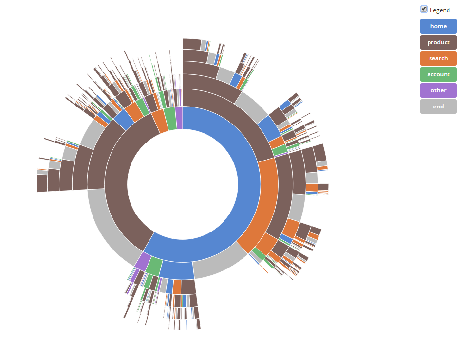
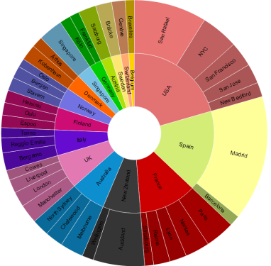
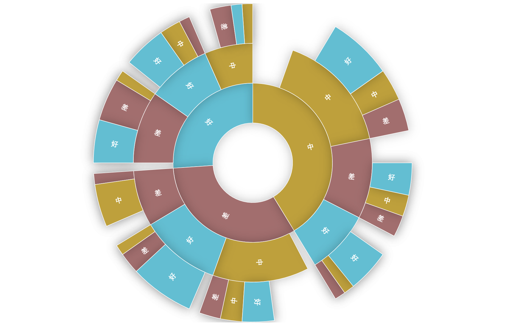
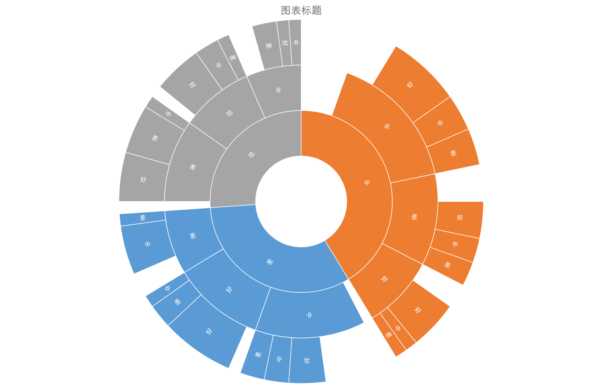

作为日常办公的常用工具之一，Excel帮助我们完成了大量快速分析和图表生成的任务。但是，让人觉得比较尴尬的是，在当前数据技术不断开拓的时代，衍生出的一系列崭新的图表表达形式则并没有被纳入Excel之前的版本中，或者，很多时候需要进行大量的数据转换或者是图表叠加才能达到所需的效果。
于是，大概是痛定思痛，又或者是死马当活马医了，Excel2016算是把旭日图加了进去。在功能上么，好吧，其实还是比较简易的。
闲话少叙，以下进入 Excel2016系列之——旭日图。
旭日图简介
旭日图的英文名是Sunburst，百度翻译比较长：从云隙射下的阳光，镶有钻石的旭日形首饰。因为没法用这么长的名字，所以一般就译为旭日图。
一般而言，旭日图在处理有层次关系的数据方面非常理想，可以看这样几个用例
来自于D3：主题是关于某网站的点击情况

图1 D3的旭日图来自于pentaho：主题是关于在不同国家不同地区的销售情况

图2 pentaho的旭日图是不是觉得相当帅气，妈妈再也不用担心作图了。
不过仔细看看，其实他就脱胎于传统的饼图。另外，是不是觉得图1比图2更cool？无他，旭日图在表现流失方面显得更为专业和实用。毕竟饱满的饼图和圆环图实在是过于烂大街了...
Excel的旭日图实现
正片来了，那么在新的Excel2016里面，应该怎么做旭日图？其实不看这篇内容可以直接参考百度经验，链接已经贴在Reference里了。
那么为什么又要这里实现一下？主要有2个原因：1是提供一种思路，在教育行业的数据中可以怎么应用。2是为了装X。
先来个成品：

图3 不同类型学生成绩变化图这图什么意思呢？概括来说，就是用了100个学生从2012学年到2014学年三年的考试成绩，每年的成绩都根据前33%，中34%，后33%的方式分为三组，然后来看，三年之中不同类型学生的成绩变化。比如，有多少学生是三年成绩都比较好的？有多少学生入学成绩很好，但是后劲不足的？等等，可以比较宏观地把握班级学生的学习状态。其中有些空白的地方，就是一些特殊情况了，比如毕业、转学、缺考。（至于你说要具体看那些学生变成啥样了，看原始数据去...）
那么，这个图是怎么从原始数据一步步来的呢？接下来就会重点说一说。
最初，数据是这个样子的：
| 学生 | 学年 | 成绩 |
|---|---|---|
| stu_1 | 2012 | 差 |
| stu_2 | 2012 | 中 |
| stu_3 | 2012 | 差 |
| stu_4 | 2012 | 中 |
| stu_5 | 2012 | 好 |
| ... | ... | ... |
| stu_1 | 2013 | 好 |
| stu_2 | 2013 | |
| stu_3 | 2013 | |
| stu_4 | 2013 | 差 |
| stu_5 | 2013 | 中 |
| ... | ... | ... |
| stu_1 | 2014 | 好 |
| stu_2 | 2014 | |
| stu_3 | 2014 | 差 |
| stu_4 | 2014 | 差 |
| stu_5 | 2014 | |
| ... | ... | ... |
显然没法直接做旭日图，
那么，就需要转换，我做的时候主要经历了2个步骤：
- 成绩转换为数字
- 以学生为对象，学年为变量进行行列转换。
- 记2012学年-2014学年的每种组合分别为一类，进行统计汇总。
首先，为了方便透视表操作，成绩转换为数字，分别记：缺失=0、差=1、中=2、好=3
结果如下：
| 学生 | 2012学年 | 2013学年 | 2014学年 |
|---|---|---|---|
| stu_1 | 1 | 3 | 3 |
| stu_2 | 2 | 0 | 0 |
| stu_3 | 1 | 0 | 1 |
| stu_4 | 2 | 1 | 1 |
| stu_5 | 3 | 2 | 0 |
| ... | ... | ... | ... |
tips:上图用数据透视表即可实现。以学生为行，学年为列，成绩为值，计算使用默认的求和即可。
结果如下：
| 类型 | 2012学年 | 2013学年 | 2014学年 | 学生 |
|---|---|---|---|---|
| 差 | 1 | 0 | 4.00% | |
| 差差 | 1 | 1 | 0 | 2.00% |
| 差差差 | 1 | 1 | 1 | 1.00% |
| 差差中 | 1 | 1 | 2 | 4.00% |
| 差中 | 1 | 2 | 0 | 5.00% |
| 差中差 | 1 | 2 | 1 | 2.00% |
| 差中中 | 1 | 2 | 2 | 2.00% |
| ... | ... | ... | ... | ... |
tips:上图用数据透视表即可实现。以2012学年、2013学年、2014学年为行，学生为值，计算使用默认的计数，显示采用行会总的百分比即可。
根据上述步骤转换后，就可以选中数据插入图表了。

图5 excel旭日图示例这样，Excel版的旭日图就初具雏形了。
神马？你问我为什么是初具雏形？好吧，后面还有一系列可调的地方，比如配色，字体，大小之类的事情，我就给不了参考意见了。
结束语：这一期的主题是旭日图，旭日图非常适合于层次关系明确的数据，在某些方面和树状图有些类似，只是表现的手法和形式有所不同。
文章末尾再呼应下副标题，一层一层又一层，就是可以慢慢剥开的意思，有递进的关系。好吧，其实应该看出来了，这边抄袭了歌词。
……如果你愿意一层一层 一层的剥开我的心 你会鼻酸 你会流泪 只要你能 听到我 看到我的全心全意……
《洋葱》 by 杨宗纬
Reference
pentaho:SunburstD3:Sequences sunburst
百度经验：Excel2016 增“旭日图”分析数据的层次及占比